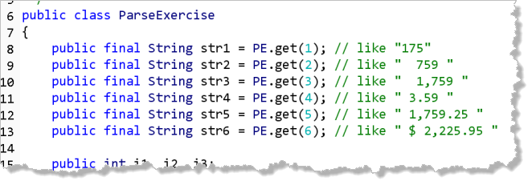
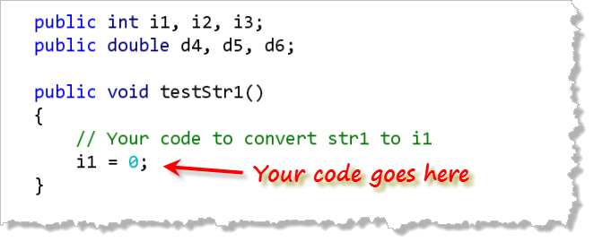

This Lab problem looks at
parsing input; converting between String
input and the numbers we'll use for calculations.
Parsing Strings
Parsing means to convert a "human-readable" (that is,
a String or text version of a) value into another
type. You may be required to parse a date like "September 3, 1962"
into the appropriate Date object, for instance.
For this exercise, though, we'll limit ourselves to parsing
numbers.
Open the starter file, ParseExercise.java, which you'll find
in your Week01 folder. The program consists of several
String variables, each of which contains a
String, initialized in a different way. The
values are initialized with random numbers, so you
can't just change the initial values manually.

Below the sixString constants, you'll find
six variables that you need to initialize: three
int variables, i1 to i3,
and three double variables, d4 through
d6.
Next, you'll find six different procedures,
testStr1() through testStr6().
Inside each procedure, you'll place the necessary
scrubbing and parsing code to make the requested
assignment.

Once you have created the program, compile it and then Check your results. Keep trying until you get a perfect score. If you have any difficulties, grab the person next to you for help. There is no video for this assignment.